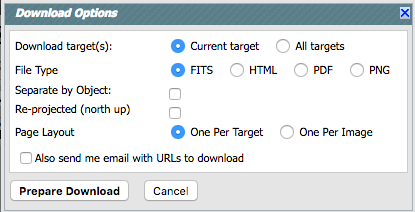

Finder Chart: Downloading Data
Contents of page/chapter:
+Overview
+Options for Downloading Data
(including reprojection)
+Download Script
+Acknowledgments
On any search results page, click "Download" (near the top
left of the image results window pane) to begin the packaging (and
downloading) process. A pop-up window will appear in order to define
exactly what kinds of data you would like to have packaged up. Select
what you want, and click "prepare download."
The packaging process spins off into the background monitor, which keeps
track of its progress and notifies you when the downloads are
complete. You can choose to have an email sent to you to let you know
when things are ready, even after the packaging process has started.
Note that you control where the data are saved on your disk
through your browser; your browser may be configured to store all
downloads in a particular location on your disk. Look for a
"Downloads" folder or search for recently modified files.
Now, we cover the various options for downloading data in much more
detail.
If you just quickly want a copy of the current images of the
current target, you can choose the PDF icon () on the upper left, and it will generate a
PDF with all the images for your current target. You can
then save it to disk for later viewing or printing. The search
parameters will appear on the top of the PDF page. If you select all
possible image sets, it will be more than one page per target; pare it
down to just the image sets you need to make it fit on one page.
For more complex situations, click on the "Download" button
(near the top left of the image results window pane). You will obtain
a pop-up window, which looks like this:

In the download pop-up, there are several options.
- Current target/All targets
- If you searched for multiple targets, the first row asks if you
would like the data for just the current target, or for all the
targets on which you searched. If you searched on only one target,
this row does not appear, because it assumes you want the one target
on which you searched.
- File type: FITS, HTML, PDF, PNG
- You can select FITS files, HTML (plus associated) files, PDF
files, or PNG files.
- The FITS files that are packaged for your
download are the original FITS files delivered by the respective
archive, which may or may not be north-up, and all surveys do not have
the same pixel size. Also note that any overlays you have added will
not be included in the FITS download, though artifacts will be
included as IPAC table files.
- PNG files, by contrast, will include the stretch and overlays as
shown in the interface. You can save the color PNGs as well; see
below.
- HTML format includes PNGs of all the images, with the stretch and
overlay as shown in the interface.
- PDF files also include the stretch and overlays plus additional
notations such as target location and survey. For PDF files, the
search parameters appear on the top of the PDF page. If you searched
on multiple targets, you may wish to include an 'objname' column in
your input file -- then your RA/Dec as well as your object name will
appear. (NB: that "objname" name should just be letters and numbers --
no parentheses or brackets, etc.) Please note that the PDF files take
time to generate, and the maximum number of sources per PDF file is
50. If you have requested data for more than 50 objects, it will
generate more than one PDF file. Also note that, while it asks you
whether or not you want one object per PDF page, if you have selected
too many image sets, it will not fit one object per PDF page.
- Separate by Object
- If you searched for multiple targets, you can choose to have the
files separated into subdirectories for each of your targets, or all
in one directory (a flat file structure). This option does not appear
when downloading data from only one target.
- Include PNG Color Images
- You can choose to save the color images as well as the
single-color-plane images. This option only makes sense (and therefore
only appears) in the context
of HTML or PNG files.It is particularly powerful for saving color
images, automatically generated, for all your batch search targets at
once.
- Reprojected (north up).
- You can choose to have
the images reprojected. Selecting this option rotates all the images
to strictly north-up (many images may already be north-up by default,
or close to it), preserving flux, and resamples the images to all be
the same pixel size, 0.36 arcsec. Do not select this option
cavalierly, because it can take a very long time, especially
for big images. (It is a non-linear process in that an image that is
twice as big takes more than twice as long to reproject.) It is using
Montage
 (specifically the library mProjectPP) on IPAC's servers to do this
reprojection; please see the Montage documentation for more details on
what, exactly, it is doing. To reproject the images on your own
(selecting your own pixel size, for example), download the original
images, and then download, install, and use the Montage
software, which is is freely available for a variety of platforms.
(specifically the library mProjectPP) on IPAC's servers to do this
reprojection; please see the Montage documentation for more details on
what, exactly, it is doing. To reproject the images on your own
(selecting your own pixel size, for example), download the original
images, and then download, install, and use the Montage
software, which is is freely available for a variety of platforms.
- Page Layout
- This option controls how the HTML or PDF pages are generated --
one per target, or one per image set (all images from a given survey).
This option only makes sense in the context of HTML or PDF pages,
because it is only in these cases where there is a page to lay out in
the first place. However, note that if you pick all possible image
sets to include, it will end up being more than one PDF page. Select
fewer image sets to enforce fitting on one page.
- Email
- You have an option to
provide an email address to which it will send an email when the
packaging is done. (Within the same Finder Chart session, Finder Chart
remembers what you have entered before, but when initiating a new
Finder Chart session, you will have to re-enter this information.)
This is useful if you are generating PDFs or color PNGs -- anything
that takes longer than a few seconds to a few minutes.
After customizing all of that, click "Prepare Download" in the pop-up
window, and it will go do it!
As it packages up the data, it will ask you if you want to spin off
this packaging process to the background monitor and create zip
files. This process could be virtually instantaneous, or take some
time. You can watch it in the background monitor. If your packaging is
taking longer than expected, you can add an email address mid-stream,
and it will email you when it is done.
The Download Retrieval Script dialog gives you some options regarding
which script you want to use. Generally speaking, the wget script is
best for Linux and Unix users. The curl script is best for Mac users,
because curl is part of the standard OS distribution; Mac users can
also go retrieve and install wget and then use the
wget scripts. For any of the scripts, you can also choose to include
an option that unzips the zip files automatically. The files stay on
disk here for at least 72 hours, so you have a window of time to
download them.
Save the script to a plain text file, and invoke the script. You can
copy and paste the script lines individually into your terminal
window, or by typing "csh [yourtextfile]" at the prompt. The files
will be automatically and sequentially downloaded to your disk, and if
you've selected that option, unzipped as well.
For Windows users, download and save the text file of URLs . Then follow the
following steps to install the wget script and then download your data:
- Go to the Windows wget web page
- Scroll to the Download section and retrieve the wget installation.
- Install wget and add the binary to your path.
- Download the text file of URLs
- At the command prompt: wget --content-disposition -i <file_of_urls_downloaded.txt>
Depending on how, exactly, you unzip your files, your computer may put
the contents of each zipfile into one directory, rather than, say, the
contents of each observation into one directory (which was the original
design, and the conceptually most straightforward). If you are using a
GUI-based method (e.g., click to uncompress), there should be a
preferences option to allow you to uncompress subsequent zipfiles into
the same root directory. If you use the download script above, the
flags sent on the command line that unzip the files should put all
files from the same observation in the same directory.
Note that you can use the \facilities call in AASTeX to acknowledge
IRSA as a facility you used in your journal article.
The standard
IRSA acknowledgment is:
This research has made use of the NASA/ IPAC Infrared Science Archive, which is operated by the Jet Propulsion Laboratory, California Institute of Technology, under contract with the National Aeronautics and Space Administration.
The standard
POSS/DSS acknowledgmet is:
The Digitized Sky Survey was produced at the Space Telescope Science Institute under U.S. Government grant NAG W-2166. The images of these surveys are based on photographic data obtained using the Oschin Schmidt Telescope on Palomar Mountain and the UK Schmidt Telescope. The plates were processed into the present compressed digital form with the permission of these institutions."
The standard
SDSS acknowledgment is:
Funding for SDSS-III has been provided by the Alfred P. Sloan Foundation, the Participating Institutions, the National Science Foundation, and the U.S. Department of Energy Office of Science. The SDSS-III web site is http://www.sdss3.org/.
SDSS-III is managed by the Astrophysical Research Consortium for the Participating Institutions of the SDSS-III Collaboration including the University of Arizona, the Brazilian Participation Group, Brookhaven National Laboratory, University of Cambridge, Carnegie Mellon University, University of Florida, the French Participation Group, the German Participation Group, Harvard University, the Instituto de Astrofisica de Canarias, the Michigan State/Notre Dame/JINA Participation Group, Johns Hopkins University, Lawrence Berkeley National Laboratory, Max Planck Institute for Astrophysics, Max Planck Institute for Extraterrestrial Physics, New Mexico State University, New York University, Ohio State University, Pennsylvania State University, University of Portsmouth, Princeton University, the Spanish Participation Group, University of Tokyo, University of Utah, Vanderbilt University, University of Virginia, University of Washington, and Yale University.
The standard
2MASS acknowledgment is:
This publication makes use of data products from the Two Micron All Sky Survey, which is a joint project of the University of Massachusetts and the Infrared Processing and Analysis Center/California Institute of Technology, funded by the National Aeronautics and Space Administration and the National Science Foundation.
The standard
Spitzer acknowledgment is:
This work is based on observations made with the Spitzer Space Telescope, which is operated by the Jet Propulsion Laboratory, California Institute of Technology under a contract with NASA.
The standard
WISE acknowledgment is:
This publication makes use of data products from the Wide-field Infrared Survey Explorer, which is a joint project of the University of California, Los Angeles, and the Jet Propulsion Laboratory/California Institute of Technology, funded by the National Aeronautics and Space Administration.
There does not seem to be a standard IRAS acknowledgment. The canonical IRAS reference is Neugebauer et al. 1984 . You may wish to include
this in the acknowledgements:
The Infrared Astronomical Satellite (IRAS) was a joint project of the US, UK and the Netherlands.
The standard
AKARI acknowledgment is:
This research is based on observations with AKARI, a JAXA project with the participation of ESA.